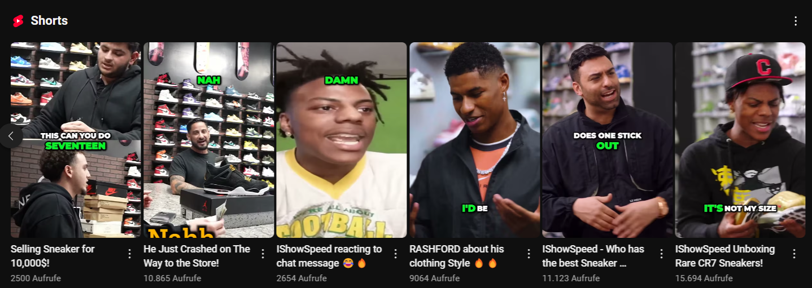

Team Size
Solo strategist
Project Overview
I wanted to see how far automated editing could take a brand-new content channel. By wiring
Opus Clips and other AI tooling into my workflow I generated dozens of short-form
videos that spotlight key moments, burn in subtitles, and auto-crop for vertical feeds.
The SneakLaker experiment amassed 50,000 views in ten days on YouTube alone,
while Instagram reels approached 25,000 additional impressions. A consistent hashtag playbook
and rapid iteration across platforms kept everything lean.
Growth Highlights
- AI-powered highlight detection distilled long videos into viral-ready shorts.
- Automated captioning with branded templates boosted retention on muted devices.
- Platform-specific scheduling uncovered the best posting windows within days.
Tech Stack
- Opus Clips
- CapCut
- Canva
- Google Sheets
- YouTube Analytics
Results Snapshot
- YouTube Shorts: 50k views in 10 days.
- Instagram Reels: 25k views with trending audio pairings.
- TikTok Experiments: 5k views while testing hook variations.
Content Gallery

